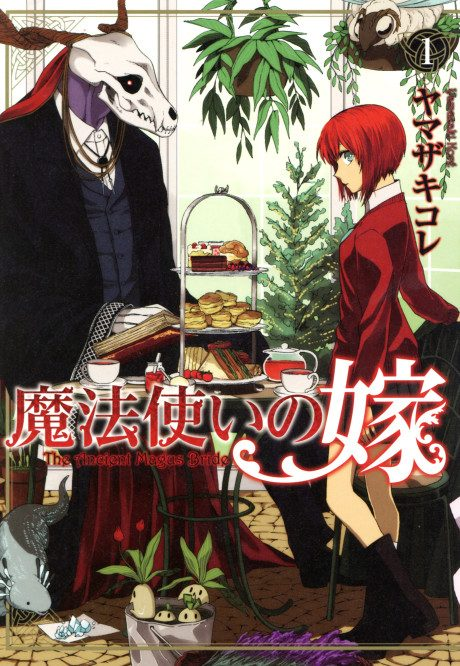

The Ancient Magus' Bride
魔法使いの嫁
After the anime, read the manga from Chapter 96.
7.8AniList score
—Animeter, no votes yet
48episodes, 3 seasons
Filler
No filler: all 24 episodes are canon. Anime Filler List covers the first 24 of 48 episodes so far.
Episodes24
Canon24
Filler0
Mixed0
Sources: Anime Filler List